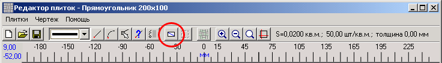
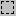
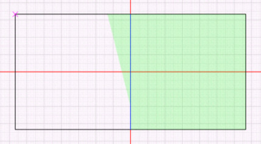

Окно для создания и редактирования половинок вызывается с панели инструментов окна редактора плиток. Кнопка доступна только после того, как плитка сохранена.

Окно имеет вид:
В левой части расположен список наборов половинок, справа - список самих половинок в наборе. Для пояснения о наборах половинок и половинках приведем пример. "Вертикальный разрез" - это набор половинок, а "Левая" и "Правая" - это уже непосредственно половинки.
Вначале добавляется набор половинок. Это делается кнопкой Добавить в левой части окна.
Пусть набор называется "Вертикальный разрез".
Теперь рисуется линия (или несколько линий), разделяющая половинку на части вертикально. Эта линия рисуется теми же инструментами, что и контур плитки. И, как и контур плитки, она должна быть нарисована сплошной линией. Линия разделения отображается синим цветом:
Линия редактируется так же, как и остальные графические элементы.
После этого выделяются половинки. Для этого на панели инструментов есть инструмент . Он задает на экране пунктирные прямоугольники по двум противоположным углам.
| · | щелчок левой кнопкой мыши - отмечается первый угол
|
| · | не отпуская левую кнопку, перетащить мышь в противоположный угол будущего прямоугольника. При этом нужно проследить, чтобы половинка, которая отмечается, полностью попала в прямоугольник, и никакая другая половинка не попала в прямоугольник полностью
|
| · | отпустить левую кнопку мыши.
|
Если все было проделано правильно, половинка добавится в набор и в правой части окна половинок появится название "Безымянная".
Если установить указатель на название половинки, то она выделится на чертеже зеленоватым фоном:
|
Предупреждение. При выделении половинки вместо аккуратного контура может получаться какой-то ломаный многоугольник:
 Причины: 1. При рисовании контура плитки получились отрезки нулевой длины. Такое бывает, если два раза щелкнуть мышкой на одном и том же месте - начало и конец совпадут. Удалите их через Список графических элементов . 2. При выделении половинки в выделение попали элементы, которые не должны образовывать контур половинки. Удалите половинку и попробуйте выделить ее еще раз. |
Аналогично добавляется вторая половинка набора:
Аналогично добавляются другие наборы половинок, например, "Горизонтальный разрез":

Нужно подробнее остановиться на названиях половинок. В приведенном примере можно оставить их без изменения - обе "Безымянная". Почему? Потому что они обе предсталяют собой абсолютно одинаковые геометрические фигуры, т.е. при укладке взаимозаменяемы. В этом случае ставим флажок "Взаимозаменяемые". При этом в отчете не будут фигурировать отдельно левая и правая половинки с одинаковым именем "Безымянная", а просто половинка "Вертикальный разрез".
|
Для пояснения приведем пример. Если бы нужно было вертикально разделить вот такую половинку:
то ни о какой взаимозаменяемости речи быть не может, флажок "Взаимозаменяемые" ставить нельзя, и нужно переименовать половинки в "Левая" и "Правая", чтобы можно было их отличить в отчете |
Остальные кнопки в окне половинок:
Слева:
| · | Редактировать - изменить имя набора половинок
|
| · | Удалить - удалить набор половинок
|
| · | Редактировать - изменить имя половинки
|
| · | Удалить - удалить половинку
|